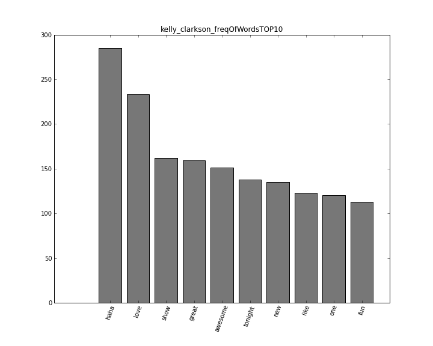
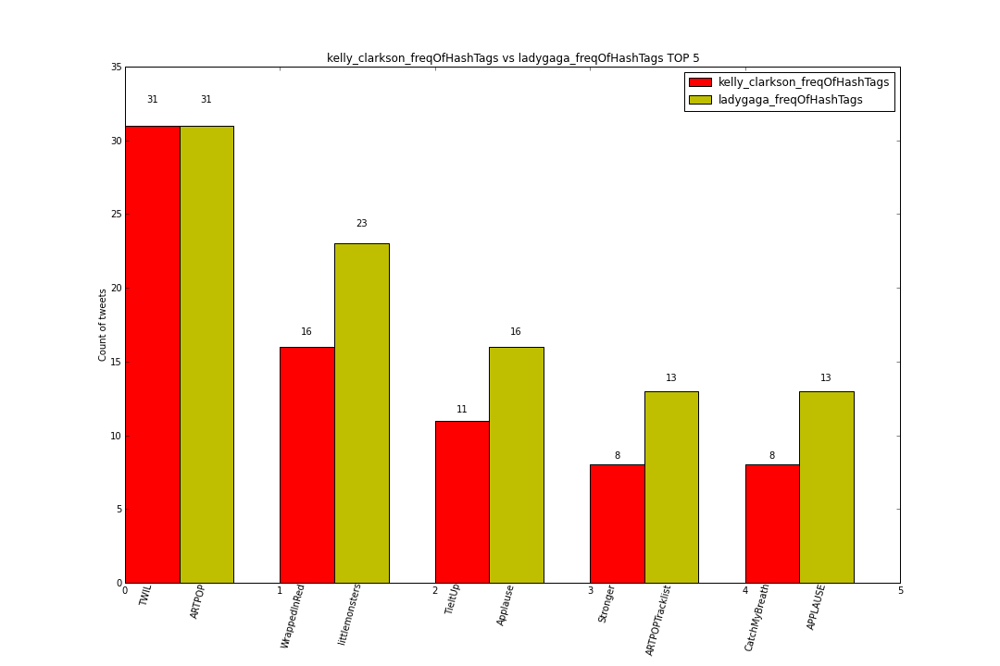

The results of this project( Diagramm Beschreibung)
We use these two images to show what our progamm dose.
All images were automatically genereted.
Single Bar Diagramms

Kelly Clarkson’s Words TOP 10:
Need description? I dont think so.
Double Bar Diagramms Overvie
